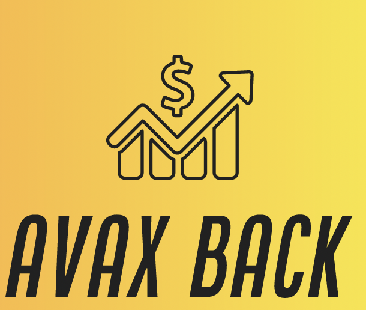

Delegate your AVAX to
NodeID-APLSFg8Fs5Nf5WyF7LqEdx5jVZb5pnMRY
and get back your AVAX!
Conditions:
- Delegate 500 AVAX or more.
- You will receive back 1/3 of the 2% fee shortly before the end of the delegation period
(as soon as it's clear that the 80% uptime threshold will be reached).